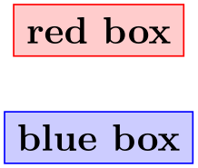

The TikZ and PGF Packages
Manual for version 3.1.10
Utilities
87 Key Management¶
This section describes the package pgfkeys. It is loaded automatically by both pgf and TikZ.
-
\usepackage{pgfkeys} % LaTeX ¶
-
\input pgfkeys.tex % plain TeX
-
\usemodule[pgfkeys] % ConTeXt
This package can be used independently of pgf. Note that no other package of pgf needs to be loaded (so neither the emulation layer nor the system layer is needed). The ConTeXt abbreviation is pgfkey if pgfmod is not loaded.
87.1 Introduction¶
87.1.1 Comparison to Other Packages¶
The pgfkeys package defines a key–value management system that is in some sense similar to the more light-weight keyval system and the improved xkeyval system. However, pgfkeys uses a slightly different philosophy than these systems and it will coexist peacefully with both of them.
The main differences between pgfkeys and xkeyval are the following:
-
• pgfkeys organizes keys in a tree, while keyval and xkeyval use families. In pgfkeys the families correspond to the root entries of the key tree.
-
• pgfkeys has no save-stack impact (you will have to read the TeXBook very carefully to appreciate this).
-
• pgfkeys is slightly slower than keyval, but not much.
-
• pgfkeys supports styles. This means that keys can just stand for other keys (which can stand for other keys in turn or which can also just execute some code). TikZ uses this mechanism heavily.
-
• pgfkeys supports multi-argument key code. This can, however, be emulated in keyval.
-
• pgfkeys supports handlers. These are call-backs that are called when a key is not known. They are very flexible, in fact even defining keys in different ways is handled by, well, handlers.
87.1.2 Quick Guide to Using the Key Mechanism¶
The following quick guide to pgf’s key mechanism only treats the most commonly used features. For an in-depth discussion of what is going on, please consult the remainder of this section.
Keys are organized in a large tree that is reminiscent of the Unix file tree. A typical key might be, say, /tikz/coordinate system/x or just /x. Again as in Unix, when you specify keys you can provide the complete path of the key, but you usually just provide the name of the key (corresponding to the file name without any path) and the path is added automatically.
Typically (but not necessarily) some code is associated with a key. To execute this code, you use the \pgfkeys command. This command takes a list of so-called key–value pairs. Each pair is of the form ⟨key⟩=⟨value⟩. For each pair the \pgfkeys command will execute the code stored for the ⟨key⟩ with its parameter set to ⟨value⟩.
Here is a typical example of how the \pgfkeys command is used:
\pgfkeys{/my key=hallo,/your keys/main key=something\strange,
key name without path=something else}
Now, to set the code that is stored in a key you do not need to learn a new command. Rather, the \pgfkeys command can also be used to set the code of a key. This is done using so-called handlers. They look like keys whose names look like “hidden files in Unix” since they start with a dot. The handler for setting the code of a key is appropriately called /.code and it is used as follows:
The value is ’hi!’.
As you can see, in the first line we defined the code for the key /my key. In the second line we executed this code with the parameter set to hi!.
There are numerous handlers for defining a key. For instance, we can also define a key whose value actually consists of more than one parameter.
The values are ’a1’ and ’a2’.
\pgfkeys{/my key/.code 2 args=The values are '#1'
and '#2'.}
\pgfkeys{/my key={a1}{a2}}
We often want to have keys where the code is called with some default value if the user does not provide a value. Not surprisingly, this is also done using a handler, this time called /.default.
(hallo)(hello)
The other way round, it is also possible to specify that a value must be specified, using a handler called /.value required. Finally, you can also require that no value may be specified using /.value forbidden.
All keys for a package like, say, TikZ start with the path /tikz. We obviously do not like to write this path down every time we use a key (so we do not have to write things like \draw[/tikz/line width=1cm]). What we need is to somehow “change the default path to a specific location”. This is done using the handler /.cd (for “change directory”). Once this handler has been used on a key, all subsequent keys in the current call of \pgfkeys only are automatically prefixed with this path, if necessary.
Here is an example:
\pgfkeys{/tikz/.cd,line width=1cm,line cap=round}
This makes it easy to define commands like \tikzset, which could be defined as follows (the actual definition is a bit faster, but the effect is the same):
When a key is handled, instead of executing some code, the key can also cause further keys to be executed. Such keys will be called styles. A style is, in essence, just a key list that should be executed whenever the style is executed. Here is an example:
(a:foo)(b:bar)(a:wow)
As the above example shows, styles can also be parameterized, just like the normal code keys.
As a typical use of styles, suppose we wish to set up the key /tikz so that it will change the default path to /tikz. This can be achieved as follows:
Note that when \pgfkeys is executed, the default path is set to /. This means that the first tikz will be completed to /tikz. Then /tikz is a style and, thus, replaced by /tikz/.cd, which changes the default path to /tikz. Thus, the line width is correctly prefixed with /tikz.
87.2 The Key Tree¶
The pgfkeys package organizes keys in a so-called key tree. This tree will be familiar to anyone who has used a Unix operating system: A key is addressed by a path, which consists of different parts separated by slashes. A typical key might be /tikz/line width or just /tikz or something more complicated like /tikz/cs/x/.store in.
Let us fix some further terminology: Given a key like /a/b/c, we call the part leading up the last slash (/a/b) the path of the key. We call everything after the last slash (c) the name of the key (in a file system this would be the file name).
We do not always wish to specify keys completely. Instead, we usually specify only part of a key (typically only the name) and the default path is then added to the key at the front. So, when the default path is /tikz and you refer to the (partial) key line width, the actual key that is used is /tikz/line width. There is a simple rule for deciding whether a key is a partial key or a full key: If it starts with a slash, then it is a full key and it is not modified; if it does not start with a slash, then the default path is automatically prefixed.
Remark: The above rule is actually a definition, hence the corresponding sufficiency conditions hold. That is, if it is a full key, then it starts with a slash; if it is a partial key, then it does not start with a slash. Moreover, a path always starts with a slash.
Note that the default path is not the same as a search path. In particular, the default path is just a single path. When a partial key is given, only this single default path is prefixed; pgfkeys does not try to look up the key in different parts of a search path. It is, however, possible to emulate search paths, but a much more complicated mechanism must be used.
When you set keys (to be explained in a moment), you can freely mix partial and full keys and you can change the default path. This makes it possible to temporarily use keys from another part of the key tree (this turns out to be a very useful feature).
Each key (may) store some tokens and there exist commands, described below, for setting, getting, and changing the tokens stored in a key. However, you will only very seldom use these commands directly. Rather, the standard way of using keys is the \pgfkeys command or some command that uses it internally like, say, \tikzset. So, you may wish to skip the following commands and continue with the next subsection.
-
\pgfkeyssetvalue{⟨full key⟩}{⟨token text⟩} ¶
Stores the ⟨token text⟩ in the ⟨full key⟩. The ⟨full key⟩ may not be a partial key, so no default-path-adding is done. The ⟨token text⟩ can be arbitrary tokens and may even contain things like # or unbalanced TeX-ifs.
Hello, world!
\pgfkeyssetvalue{/my
family/my
key}{Hello, world!}
\pgfkeysvalueof{/my
family/my
key}
The setting of a key is always local to the current TeX group.
-
\pgfkeyssetevalue{⟨full key⟩}{⟨token text⟩} ¶
The \edef version of \pgfkeyssetvalue.
-
\pgfkeyslet{⟨full key⟩}{⟨macro⟩} ¶
Performs a \let statement so the ⟨full key⟩ points to the contents of ⟨macro⟩.
Hello, world!
\def\helloworld{Hello, world!}
\pgfkeyslet{/my
family/my
key}{\helloworld}
\pgfkeysvalueof{/my
family/my
key}
You should never let a key be equal to \relax. Such a key may or may not be indistinguishable from an undefined key.
-
\pgfkeysgetvalue{⟨full key⟩}{⟨macro⟩} ¶
Retrieves the tokens stored in the ⟨full key⟩ and lets ⟨macro⟩ be equal to these tokens. If the key has not been set, the ⟨macro⟩ will be equal to \relax.
Hello, world!
\pgfkeyssetvalue{/my
family/my
key}{Hello, world!}
\pgfkeysgetvalue{/my
family/my
key}{\helloworld}
\helloworld
-
\pgfkeysvalueof{⟨full key⟩} ¶
Inserts the value stored in ⟨full key⟩ at the current position into the text. It expands to an alias of the primitive \relax if the key is undefined.
Hello, world!
\pgfkeyssetvalue{/my
family/my
key}{Hello, world!}
\pgfkeysvalueof{/my
family/my
key}
Note: It is an error to assign to the result of the expansion of \pgfkeysvalueof, not only semantically but in recent versions of pgf also logically. To set the value of a key always use the appropriate interfaces, e.g. \pgfkeyssetvalue.
-
\pgfkeysifdefined{⟨full key⟩}{⟨if⟩}{⟨else⟩} ¶
Checks whether this key was previously set using either \pgfkeyssetvalue or \pgfkeyslet. If so, the code in ⟨if⟩ is executed, otherwise the code in ⟨else⟩.
yes
\pgfkeyssetvalue{/my
family/my
key}{Hello, world!}
\pgfkeysifdefined{/my
family/my
key}{yes}{no}
87.3 Setting Keys¶
Setting keys is done using a powerful command called \pgfkeys. This command takes a list of so-called key–value pairs. These are pairs of the form ⟨key⟩=⟨value⟩. The principal idea is the following: For each pair in the list, some action is taken. This action can be one of the following:
-
1. A command is executed whose argument(s) are ⟨value⟩. This command is stored in a special subkey of ⟨key⟩.
-
2. The ⟨value⟩ is stored in the ⟨key⟩ itself.
-
3. If the key’s name (the part after the last slash) is a known handler, then this handler will take care of the key.
-
4. If the key is totally unknown, one of several possible unknown key handlers is called.
Additionally, if the ⟨value⟩ is missing, a default value may or may not be substituted. Before we plunge into all the details, let us have a quick look at the command itself.
-
\pgfkeys{⟨key list⟩} ¶
The ⟨key list⟩ should be a list of key–value pairs, separated by commas. A key–value pair can have the following two forms: ⟨key⟩=⟨value⟩ or just ⟨key⟩. Any spaces around the ⟨key⟩ or around the ⟨value⟩ are removed. It is permissible to surround both the ⟨key⟩ or the ⟨value⟩ in curly braces, which are also removed. Especially putting the ⟨value⟩ in curly braces needs to be done quite often, namely whenever the ⟨value⟩ contains an equal-sign or a comma.
The key–value pairs in the list are handled in the order they appear. How this handling is done, exactly, is described in the rest of this section.
If a ⟨key⟩ is a partial key, the current value of the default path is prefixed to the ⟨key⟩ and this “upgraded” key is then used. The default path is just the root path / when the first key is handled, but it may change later on. At the end of the command, the default path is reset to the value it had before this command was executed.
Calls of this command may be nested. Thus, it is permissible to call \pgfkeys inside the code that is executed for a key. Since the default path is restored after a call of \pgfkeys, the default path will not change when you call \pgfkeys while executing code for a key (which is exactly what you want).
-
\pgfqkeys{⟨default path⟩}{⟨key list⟩} ¶
This command has the same effect as \pgfkeys{⟨default path⟩/.cd,⟨key list⟩}, it is only marginally quicker. This command should not be used in user code, but rather in commands like \tikzset or \pgfset that get called very often.
-
\pgfkeysalso{⟨key list⟩} ¶
This command has exactly the same effect as \pgfkeys, only the default path is not modified before or after the keys are being set. This command is mainly intended to be called by the code that is being processed for a key.
-
\pgfqkeysalso{⟨default path⟩}{⟨key list⟩} ¶
This command has the same effect as \pgfkeysalso{⟨default path⟩/.cd,⟨key list⟩}, it is only quicker. Changing the default path inside a \pgfkeyalso is dangerous, so use with care. A rather safe place to call this command is at the beginning of a TeX group.
87.3.1 First Char Syntax Detection¶
Usually, keys are of the form ⟨key⟩=⟨value⟩ and how such keys are handled is discussed in the rest of this section. However, it is also possible to setup a different syntax for certain parts of the input to \pgfkeys. Since this is a rather advanced option, most readers may wish to skip the following discussion upon first reading; it is discussed here because this special syntax detection is the very first thing that is done when a key is processed, before any of the following operations are performed.
The \pgfkeys command and its variants decompose their input into a list of ⟨string⟩s that are separated by commas. By default, each such ⟨string⟩ must either have the form ⟨key⟩=⟨value⟩ or of the form ⟨key⟩ with the value-part missing. However, you might wish to interpret some of these strings differently. For instance, when a ⟨string⟩ has the form "⟨text⟩", you might wish the ⟨string⟩ to be interpreted as if one had written label text={⟨text⟩}. Then, people could write
\myset{red, "main
valve", thick}
instead of the more cumbersome
An example where such a syntax reinterpretation is done is the quotes library, which allows you to write things like
instead of the somewhat longer
In order to detect whether a ⟨string⟩ has a special syntax, you can request that the first character of ⟨string⟩ is analysed by the key parser. If this first character matches a character that has been flagged as a special character, the ⟨string⟩ is not interpreted as a usual key–value pair. Instead, ⟨string⟩ is passed as a parameter to a special macro that should take care of the ⟨string⟩. After this macro has finished, the parsing continues with the ⟨next string⟩ in the list.
In order to setup a special syntax handling for ⟨strings⟩ that begin with a certain character, two things need to be done:
-
1. First, the whole first char syntax detection must be “switched on”, since, by default, it is turned off for efficiency reasons (the overhead is rather small, however). This is done by setting the following key:
-
/handlers/first char syntax=⟨true or false⟩ (default true, initially false) ¶
-
-
2. Second, in order to handle strings starting with a certain ⟨character⟩ in a special way, you need to store a macro in the following key:
-
/handlers/first char syntax/⟨meaning of character⟩(no value) ¶
The ⟨meaning of character⟩ should be the text that TeX’s command \meaning returns for a macro that has been \let to the ⟨character⟩. For instance, when strings starting with " should be treated in a special way, the ⟨meaning of character⟩ would be the string the character " since this is what TeX writes when you say
the character ”
\let\mycharacter="
\meaning\mycharacter
Now, the key /handlers/first char syntax/⟨meaning of character⟩ should be setup (using \pgfkeyssetvalue or using the .initial handler) to store a ⟨macro name⟩.
If this is the case and if ⟨string⟩ starts with the ⟨character⟩ (blanks at the beginning of ⟨string⟩ are deleted prior to this test), then ⟨macro name⟩ is called with ⟨string⟩ as its argument.
-
Let us now have a look at an example. We install two handlers, one for strings starting with " and one for strings starting with <.
Naturally, in the above examples, the two handling macros did not do something particularly exciting. In the next example, we setup a more elaborate macro that mimics a small part the behavior of the quotes library, only for single quotes:

\pgfkeys{
/handlers/first char syntax=true,
/handlers/first char syntax/the character '/.initial=\mysinglequotemacro
}
\def\mysinglequotemacro#1{\pgfkeysalso{label={#1}}}
\tikz \node [circle, 'foo', draw] {bar};
Note that in the above example, the macro \mysinglequotemacro gets passed the complete string, including the single quotes. It is the job of the macro to get rid of them, if this is necessary.
The first char syntax detection allows you to perform rather powerful transformations on the syntax of keys – provided you can “pin down” the syntax on the first character. In the following example, you can write expressions in parentheses in front of a key–value pair and the pair will only be executed when the expression evaluates to true:

\pgfkeys{
/handlers/first char syntax=true,
/handlers/first char syntax/the character (/.initial=\myparamacro
}
\def\myparamacro#1{\myparaparser#1\someendtext}
\def\myparaparser(#1)#2\someendtext{
\pgfmathparse{#1}
\ifx\pgfmathresult\onetext
\pgfkeysalso{#2}
\fi
}
\def\onetext{1}
\foreach \i in
{1,...,4}
\tikz \node [draw, thick, rectangle, (pi>\i) circle, (pi>\i*2) draw=red] {x};
87.3.2 Default Arguments¶
The arguments of the \pgfkeys command can either be of the form ⟨key⟩=⟨value⟩ or of the form ⟨key⟩ with the value-part missing. In the second case, the \pgfkeys will try to provide a default value for the ⟨value⟩. If such a default value is defined, it will be used as if you had written ⟨key⟩=⟨default value⟩.
In the following, the details of how default values are determined is described; however, you should normally use the handlers /.default and /.value required as described in Section 87.4.2 and you may wish to skip the following details.
When \pgfkeys encounters a ⟨key⟩ without an equal-sign, the following happens:
-
1. The input is replaced by ⟨key⟩=\pgfkeysnovalue. In particular, the commands \pgfkeys{my key} and \pgfkeys{my key=\pgfkeysnovalue} have exactly the same effect and you can “simulate” a missing value by providing the value \pgfkeysnovalue, which is sometimes useful.
-
2. If the ⟨value⟩ is \pgfkeysnovalue, then it is checked whether the subkey ⟨key⟩/.@def exists. For instance, if you write \pgfkeys{/my key}, then it is checked whether the key /my key/.@def exists.
-
3. If the key ⟨key⟩/.@def exists, then the tokens stored in this key are used as ⟨value⟩.
-
4. If the key does not exist, then \pgfkeysnovalue is used as the ⟨value⟩.
-
5. At the end, if the ⟨value⟩ is now equal to \pgfkeysvaluerequired, then the code (or something fairly equivalent) \pgfkeys{/errors/value required=⟨key⟩{}} is executed. Thus, by changing this key you can change the error message that is printed or you can handle the missing value in some other way.
87.3.3 Keys That Execute Commands¶
After the transformation process described in the previous subsection, we arrive at a key of the form ⟨key⟩=⟨value⟩, where ⟨key⟩ is a full key. Different things can now happen, but always the macro \pgfkeyscurrentkey will have been set up to expand to the text of the ⟨key⟩ that is currently being processed.
The first things that is tested is whether the key ⟨key⟩/.@cmd exists. If this is the case, then it is assumed that this key stores the code of a macro and this macro is executed. The argument of this macro is ⟨value⟩ directly followed by \pgfeov, which stands for “end of value”. The ⟨value⟩ is not surrounded by braces. After this code has been executed, \pgfkeys continues with the next key in the ⟨key list⟩.
It may seem quite peculiar that the macro stored in the key ⟨key⟩/.@cmd is not simply executed with the argument {⟨value⟩}. However, the approach taken in the pgfkeys packages allows for more flexibility. For instance, assume that you have a key that expects a ⟨value⟩ of the form “⟨text⟩+⟨more text⟩” and wishes to store ⟨text⟩ and ⟨more text⟩ in two different macros. This can be achieved as follows:
\a is ‘hello’, \b is ‘world’.
\usepackage {shortvrb} \MakeShortVerb {\|}
\def\mystore#1+#2\pgfeov{\def\a{#1}\def\b{#2}}
\pgfkeyslet{/my
key/.@cmd}{\mystore}
\pgfkeys{/my key=hello+world}
|\a|
is
`\a', |\b|
is
`\b'.
Naturally, defining the code to be stored in a key in the above manner is too awkward. The following commands simplify things a bit, but the usual manner of setting up code for a key is to use one of the handlers described in Section 87.4.3.
-
\pgfkeysdef{⟨key⟩}{⟨code⟩} ¶
This command temporarily defines a TeX-macro with the argument list #1\pgfeov and then lets ⟨key⟩/.@cmd be equal to this macro. The net effect of all this is that you have then set up code for the key ⟨key⟩ so that when you write \pgfkeys{⟨key⟩=⟨value⟩}, then the ⟨code⟩ is executed with all occurrences of #1 in ⟨code⟩ being replaced by ⟨value⟩. (This behavior is quite similar to the \define@key command of keyval and xkeyval).
hello, hello.
\pgfkeysdef{/my
key}{#1, #1.}
\pgfkeys{/my key=hello}
-
\pgfkeysedef{⟨key⟩}{⟨code⟩} ¶
This command works like \pgfkeysdef, but it uses \edef rather than \def when defining the key macro. If you do not know the difference between the two, then you will not need this command; and if you know the difference, then you will know when you need this command.
-
\pgfkeysdefnargs{⟨key⟩}{⟨argument count⟩}{⟨code⟩} ¶
This command works like \pgfkeysdef, but it allows you to provide an arbitrary ⟨argument count⟩ between \(0\) and \(9\) (inclusive).
\a is ‘hello’, \b is ‘world’.
\usepackage {shortvrb} \MakeShortVerb {\|}
\pgfkeysdefnargs{/my
key}{2}{\def\a{#1}\def\b{#2}}
\pgfkeys{/my key=
{hello}
{world}}
|\a|
is
`\a', |\b|
is
`\b'.
The resulting key will expect exactly {⟨argument count⟩} arguments.
-
\pgfkeysedefnargs{⟨key⟩}{⟨argument count⟩}{⟨code⟩} ¶
The \edef version of \pgfkeysdefnargs.
-
\pgfkeysdefargs{⟨key⟩}{⟨argument pattern⟩}{⟨code⟩} ¶
This command works like \pgfkeysdefnargs, but it allows you to provide an arbitrary ⟨argument pattern⟩ rather than just a number of arguments.
\a is ‘hello’, \b is ‘world’.
\usepackage {shortvrb} \MakeShortVerb {\|}
\pgfkeysdefargs{/my
key}{#1+#2}{\def\a{#1}\def\b{#2}}
\pgfkeys{/my key=hello+world}
|\a|
is
`\a', |\b|
is
`\b'.
Note that \pgfkeysdefnargs is better when it comes to simple argument counts14.
-
\pgfkeysedefargs{⟨key⟩}{⟨argument pattern⟩}{⟨code⟩} ¶
The \edef version of \pgfkeysdefargs.
14 When the resulting keys are used, the defnargs variant allows spaces between arguments whereas the defargs variant does not; it considers the spaces as part of the argument.
87.3.4 Keys That Store Values¶
Let us continue with what happens when \pgfkeys processes the current key and the subkey ⟨key⟩/.@cmd is not defined. Then it is checked whether the ⟨key⟩ itself exists (has been previously assigned a value using, for instance, \pgfkeyssetvalue). In this case, the tokens stored in ⟨key⟩ are replaced by ⟨value⟩ and \pgfkeys proceeds with the next key in the ⟨key list⟩.
87.3.5 Keys That Are Handled¶
If neither the ⟨key⟩ itself nor the subkey ⟨key⟩/.@cmd are defined, then the ⟨key⟩ cannot be processed “all by itself”. Rather, a ⟨handler⟩ is needed for this key. Most of the power of pgfkeys comes from the proper use of such handlers.
Recall that the ⟨key⟩ is always a full key (if it was not originally, it has already been upgraded at this point to a full key). It decomposed into two parts:
-
1. The ⟨path⟩ of ⟨key⟩ (everything before the last slash) is stored in the macro \pgfkeyscurrentpath.
-
2. The ⟨name⟩ of ⟨key⟩ (everything after the last slash) is stored in the macro \pgfkeyscurrentname.
It is recommended (but not necessary) that the name of a handler starts with a dot (but not with .@), so that they are easy to detect for the reader.
(For efficiency reasons, these two macros are only set up at this point; so when code is executed for a key in the “usual” manner then these macros are not set up.)
The \pgfkeys command now checks whether the key /handlers/⟨name⟩/.@cmd exists. If so, it should store a command and this command is executed exactly in the same manner as described in Section 87.3.3. Thus, this code gets the ⟨value⟩ that was originally intended for ⟨key⟩ as its argument, followed by \pgfeov. It is the job of the handlers to do something useful with the ⟨value⟩.
For an example, let us write a handler that will output the value stored in a key to the log file. We call this handler /.print to log. The idea is that when someone tries to use the key /my key/.print to log, then this key will not be defined and the handler gets executed. The handler will then have access to the path-part of the key, which is /my key, via the macro \pgfkeyscurrentpath. It can then lookup which value is stored in this key and print it.
\pgfkeysdef{/handlers/.print
to
log}
{%
\pgfkeysgetvalue{\pgfkeyscurrentpath}{\temp}
\writetolog{\temp}
}
\pgfkeyssetvalue{/my
key}{Hi!}
...
\pgfkeys{/my key/.print to log}
The above code will print Hi! in the log, provided the macro \writetolog is set up appropriately.
For a more interesting handler, let us program a handler that will set up a key so that when the key is used, some code is executed. This code is given as ⟨value⟩. All the handler must do is to call \pgfkeysdef for the path of the key (which misses the handler’s name) and assign the parameter value to it.
(hallo)
\pgfkeysdef{/handlers/.my
code}{\pgfkeysdef{\pgfkeyscurrentpath}{#1}}
\pgfkeys{/my key/.my code=(#1)}
\pgfkeys{/my key=hallo}
There are some parameters for handled keys which prove to be useful in some (possibly rare) special cases:
-
/handler config=all|only existing|full or existing (no default, initially all) ¶
- all
-
The preconfigured setting all works as described above and imposes no restriction on the key setting process.
- only existing
-
The value only existing modifies the algorithm for handled keys as follows: a handler ⟨key name⟩/.⟨handler⟩ will be executed only if ⟨key name⟩ is either a key which stores its value directly or a command key for which /.@cmd exists. If ⟨key name⟩ does not exist already, the complete string ⟨key name⟩/.⟨handler⟩ is considered to be an unknown key and the procedure described in the next section applies (for the path of ⟨key name⟩).
Initial definition.Re-Definition.Unknown key ‘/the/other key/.code’.
% Define a test key and error handlers:
\pgfkeys{/the/key/.code={Initial definition. }}
\pgfkeys{/handlers/.unknown/.code={Unknown key `\pgfkeyscurrentkey'. }}
% calling the test key yields 'Initial definition. ':
\pgfkeys{/the/key}
% Change configuration:
\pgfkeys{/handler config=only existing}
% allowed: key *re*-definition:
\pgfkeys{/the/key/.code={Re-Definition. }}
% calling the key yields 'Re-Definition. ':
\pgfkeys{/the/key}
% not allowed: definition of new keys:
% this checks for '/the/other key/.unknown'
% and '/handlers/.unknown'
% and yields finally
% 'Unknown key `/the/other key/.code`'
\pgfkeys{/the/other key/.code={New definition. }}
It is necessary to exclude some key handlers from this procedure. Altogether, the detailed procedure is as follows:
-
1. If a handled key like /a path/a key/.a handler=value is encountered, it is checked whether the handler should be invoked. This is the case if
-
• An exception from only existing for this key exists (see below),
-
• The key /a path/a key exists already – either directly as storage key or with the .@cmd suffix.
-
-
2. If the check passes, everything works as before.
-
3. If the check fails, the complete key will be considered to be unknown. In that case, the handling of unknown keys as described in the next section applies. There, the current key path will be set to /a path and the current key’s name to key/.a handler.
A consequence of this configuration is to provide more meaningful processing of handled keys if a search path for keys is in effect, see section 87.3.6 for an example.
-
- full or existing
-
Finally, the choice full or existing is a variant of only existing: it works in the same way for keys which do not have a full key path. For example, the style
\pgfkeys{/my path/.cd,key/.style={\(\dotsc \)}}
can only be redefined: it doesn’t have a full path, so the only existing mechanism applies. But the style
\pgfkeys{/my path/key/.style={\(\dotsc \)}}
will still work. This allows users to override the only existing feature if they know what they’re doing (and provide full key paths).
Changes the initial configuration how key handlers will be used.
This configuration is for advanced users and rarely necessary.
-
/handler config/only existing/add exception={⟨key handler name⟩}(no default) ¶
Allows to add exceptions to the /handler config=only existing feature. Initially exceptions for the key handlers /.cd, /.try, /.retry, /.lastretry and /.unknown are defined. The value {⟨key handler name⟩} should be the name of a key handler.
87.3.6 Keys That Are Unknown¶
For some keys, neither the key, nor its .@cmd subkey nor a handler is defined. In this case, it is checked whether the key ⟨current path⟩/.unknown/.@cmd exists. Thus, when you try to use the key /tikz/strange, then it is checked whether /tikz/.unknown/.@cmd exists. If this key exists (which it does), it is executed. This code can then try to make sense of the key. For instance, the handler for TikZ will try to interpret the key’s name as a color or as an arrow specification or as a pgf option.
You can set up unknown key handlers for your own keys by simply setting the code of the key ⟨my path prefix⟩/.unknown. This also allows you to set up “search paths”. The idea is that you would like keys to be searched not only in a single default path, but in several. Suppose, for instance, that you would like keys to be searched for in /a, /b, and /b/c. We set up a key /my search path for this:
\pgfkeys{/my search path/.unknown/.code=
{%
\let\searchname=\pgfkeyscurrentname%
\pgfkeysalso{%
/a/\searchname/.try=#1,
/b/\searchname/.retry=#1,
/b/c/\searchname/.retry=#1%
}%
}%
}
\pgfkeys{/my search path/.cd,foo,bar}
In the above code, foo and bar will be searched for in the three directories /a, /b, and /b/c. Before you start implementing search paths using this pattern, consider the /.search also handler discussed below.
If the key ⟨current path⟩/.unknown/.@cmd does not exist, the handler /handlers/.unknown is invoked instead, which is always defined and which prints an error message by default.
87.3.7 Search Paths And Handled Keys¶
There is one special case which occurs in the search path example above. What happens if we want to change a style? For example,
could mean a style in /my search path/, /a/, /b/ or even /b/c/!
Due to the rules for handled keys, the answer is /my search path/custom/.style={variables}. It may be useful to modify this default behavior. One useful thing would be to search for existing styles named custom and redefine them. For example, if a style /b/custom exists, the assignment custom/.style={variables} should probably redefine /b/custom instead of /my search path/custom. This can be done using handler config:
This is ‘/b/custom’. This is ‘/b/custom’.Modified.
\pgfkeys{/my search path/.unknown/.code=
{%
\let\searchname=\pgfkeyscurrentname%
\pgfkeysalso{%
/a/\searchname/.try=#1,
/b/\searchname/.retry=#1,
/b/c/\searchname/.retry=#1%
}%
}%
}
% Let's define /b/custom here:
\pgfkeys{/b/custom/.code={This is `\pgfkeyscurrentkey'. }}
% Reconfigure treatment of key handlers:
\pgfkeys{/handler config=only existing}
% The search path procedure will find /b/custom
% -> leads to This is `/b/custom'
\pgfkeys{/my search path/.cd,custom}
% Due to the reconfiguration, this will find /b/custom
instead of
% defining /my search path/custom:
\pgfkeys{/my search path/.cd,custom/.append code={Modified. }}
% So using the search path, we again find /b/custom
which
% leads to This is `/b/custom' Modified
\pgfkeys{/my search path/.cd,custom}
A slightly different approach to search paths can be realized using the /.search also key handler, see below.
87.4 Key Handlers¶
We now describe which key handlers are defined by default. You can also define new ones as described in Section 87.3.5.
87.4.1 Handlers for Path Management¶
-
Key handler ⟨key⟩/.cd ¶
This handler causes the default path to be set to ⟨key⟩. Note that the default path is reset at the beginning of each call to \pgfkeys to be equal to /.
Example: \pgfkeys{/tikz/.cd,...}
-
Key handler ⟨key⟩/.is family ¶
This handler sets up things such that when ⟨key⟩ is executed, then the current path is set to ⟨key⟩. A typical use is the following:
\pgfkeys{/tikz/.is family}
\pgfkeys{tikz,line width=1cm}
The effect of this handler is the same as if you had written ⟨key⟩/.style=⟨key⟩/.cd, only the code produced by the /.is family handler is quicker.
87.4.2 Setting Defaults¶
-
Key handler ⟨key⟩/.default=⟨value⟩ ¶
Sets the default value of ⟨key⟩ to ⟨value⟩. This means that whenever no value is provided in a call to \pgfkeys, then this ⟨value⟩ will be used instead.
Example: \pgfkeys{/width/.default=1cm}
-
Key handler ⟨key⟩/.value required ¶
This handler causes the error message key /errors/value required to be issued whenever the ⟨key⟩ is used without a value.
Example: \pgfkeys{/width/.value required}
-
Key handler ⟨key⟩/.value forbidden ¶
This handler causes the error message key /errors/value forbidden to be issued whenever the ⟨key⟩ is used with a value.
This handler works be adding code to the code of the key. This means that you have to define the key first before you can use this handler.
87.4.3 Defining Key Codes¶
A number of handlers exist for defining the code of keys.
-
Key handler ⟨key⟩/.code=⟨code⟩ ¶
This handler executes \pgfkeysdef with the parameters ⟨key⟩ and ⟨code⟩. This means that, afterwards, whenever the ⟨key⟩ is used, the ⟨code⟩ gets executed. More precisely, when ⟨key⟩=⟨value⟩ is encountered in a key list, ⟨code⟩ is executed with any occurrence of #1 replaced by ⟨value⟩. As always, if no ⟨value⟩ is given, the default value is used, if defined, or the special value \pgfkeysnovalue.
It is permissible that ⟨code⟩ calls the command \pgfkeys. It is also permissible that ⟨code⟩ calls the command \pgfkeysalso, which is useful for styles, see below.
-
Key handler ⟨key⟩/.ecode=⟨code⟩ ¶
This handler works like /.code, only the command \pgfkeysedef is used.
-
Key handler ⟨key⟩/.code 2 args=⟨code⟩ ¶
This handler works like /.code, only two arguments rather than one are expected when the ⟨code⟩ is executed. This means that when ⟨key⟩=⟨value⟩ is encountered in a key list, the ⟨value⟩ should consist of two arguments. For instance, ⟨value⟩ could be {first}{second}. Then ⟨code⟩ is executed with any occurrence of #1 replaced first and any occurrence of #2 replaced by second.
\pgfkeys{/page size/.code 2 args={\paperheight=#2\paperwidth=#1}}
\pgfkeys{/page size={30cm}{20cm}}
Because of the special way the ⟨value⟩ is parsed, if you set ⟨value⟩ to, for instance, first (without any braces), then #1 will be set to f and #2 will be set to irst.
-
Key handler ⟨key⟩/.ecode 2 args=⟨code⟩ ¶
This handler works like /.code 2 args, only an \edef is used rather than a \def to define the macro.
-
Key handler ⟨key⟩/.code n args={⟨argument count⟩}{⟨code⟩} ¶
This handler also works like /.code, but you can now specify a number of arguments between \(0\) and \(9\) (inclusive).
First=‘A’, Second=‘B’
\pgfkeys{/a key/.code n args={2}{First=`#1', Second=`#2'}}
\pgfkeys{/a key={A}{B}}
In contrast to /.code 2 args, there must be exactly ⟨argument count⟩ arguments, not more and not less and these arguments should be properly delimited.
-
Key handler ⟨key⟩/.ecode n args={⟨argument count⟩}{⟨code⟩} ¶
This handler works like /.code n args, only an \edef is used rather than a \def to define the macro.
-
Key handler ⟨key⟩/.code args={⟨argument pattern⟩}{⟨code⟩} ¶
This handler is the most flexible way to define a /.code key: you can now specify an arbitrary ⟨argument pattern⟩. Such a pattern is a usual TeX macro pattern. For instance, suppose ⟨argument pattern⟩ is (#1/#2) and ⟨key⟩=⟨value⟩ is encountered in a key list with ⟨value⟩ being (first/second). Then ⟨code⟩ is executed with any occurrence of #1 replaced first and any occurrence of #2 replaced by second. So, the actual ⟨value⟩ is matched against the ⟨argument pattern⟩ in the standard TeX way.
\pgfkeys{/page size/.code args={#1 and #2}{\paperheight=#2\paperwidth=#1}}
\pgfkeys{/page size=30cm and 20cm}
Note that /.code n args should be preferred in case you need just a number of arguments (when the resulting keys are used, /.code n args gobbles spaces between the arguments whereas /.code args considers spaces to be part of the argument).
-
Key handler ⟨key⟩/.ecode args={⟨argument pattern⟩}{⟨code⟩} ¶
This handler works like /.code args, only an \edef is used rather than a \def to define the macro.
There are also handlers for modifying existing keys.
-
Key handler ⟨key⟩/.add code={⟨prefix code⟩}{⟨append code⟩} ¶
This handler adds code to an existing key. The ⟨prefix code⟩ is added to the code stored in ⟨key⟩/.@cmd at the beginning, the ⟨append code⟩ is added to this code at the end. Either can be empty. The argument list of ⟨code⟩ cannot be changed using this handler. Note that both ⟨prefix code⟩ and ⟨append code⟩ may contain parameters like #2.
-
Key handler ⟨key⟩/.prefix code=⟨prefix code⟩ ¶
This handler is a shortcut for ⟨key⟩/.add code={⟨prefix code⟩}{}. That is, this handler adds the ⟨prefix code⟩ at the beginning of the code stored in ⟨key⟩/.@cmd.
-
Key handler ⟨key⟩/.append code=⟨append code⟩ ¶
This handler is a shortcut for ⟨key⟩/.add code={}{⟨append code⟩}.
87.4.4 Defining Styles¶
The following handlers allow you to define styles. A style is a key list that is processed whenever the style is given as a key in a key list. Thus, a style “stands for” a certain key value list. Styles can be parameterized just like normal code.
-
Key handler ⟨key⟩/.style=⟨key list⟩ ¶
This handler sets things up so that whenever ⟨key⟩=⟨value⟩ is encountered in a key list, then the ⟨key list⟩, with every occurrence of #1 replaced by ⟨value⟩, is processed instead. As always, if no ⟨value⟩ is given, the default value is used, if defined, or the special value \pgfkeysnovalue.
You can achieve the same effect by writing ⟨key⟩/.code=\pgfkeysalso{⟨key list⟩}. This means, in particular, that the code of a key could also first execute some normal code and only then process some further keys.
The following example shows a parameterized style “in action”.

\begin{tikzpicture}[outline/.style={draw=#1,fill=#1!20}]
\node [outline=red] {red
box};
\node [outline=blue] at
(0,-1) {blue
box};
\end{tikzpicture}
-
Key handler ⟨key⟩/.estyle=⟨key list⟩ ¶
This handler works like /.style, only the ⟨code⟩ is set using \edef rather than \def. Thus, all macros in the ⟨code⟩ are expanded prior to saving the style.
For styles the corresponding handlers as for normal code exist:
-
Key handler ⟨key⟩/.style 2 args=⟨key list⟩ ¶
This handler works like /.code 2 args, only for styles. Thus, the ⟨key list⟩ may contain occurrences of both #1 and #2 and when the style is used, two parameters must be given as ⟨value⟩.
-
Key handler ⟨key⟩/.estyle 2 args=⟨key list⟩ ¶
This handler works like /.style 2 args, only an \edef is used rather than a \def to define the macro.
-
Key handler ⟨key⟩/.style n args={⟨argument count⟩}⟨key list⟩ ¶
This handler works like /.code n args, only for styles. Here, ⟨key list⟩ may depend on all ⟨argument count⟩ parameters.
-
Key handler ⟨key⟩/.add style={⟨prefix key list⟩}{⟨append key list⟩} ¶
This handler works like /.add code, only for styles. However, it is permissible to add styles to keys that have previously been set using /.code. (It is also permissible to add normal ⟨code⟩ to a key that has previously been set using /.style). When you add a style to a key that was previously set using /.code, the following happens: When ⟨key⟩ is processed, the ⟨prefix key list⟩ will be processed first, then the ⟨code⟩ that was previously stored in ⟨key⟩/.@cmd, and then the keys in ⟨append key list⟩ are processed.
\pgfkeys{/par indent/.code={\parindent=#1}}
\pgfkeys{/par indent/.add style={}{/my key=#1}}
...
\pgfkeys{/par indent=1cm} % This will set \parindent and
% then execute /my key=#1
-
Key handler ⟨key⟩/.style args={⟨argument pattern⟩}{⟨key list⟩} ¶
This handler works like /.code args, only for styles.
-
Key handler ⟨key⟩/.estyle args={⟨argument pattern⟩}{⟨code⟩} ¶
This handler works like /.ecode args, only for styles.
-
Key handler ⟨key⟩/.prefix style=⟨prefix key list⟩ ¶
Works like /.add style, but only for the prefix key list.
-
Key handler ⟨key⟩/.append style=⟨append key list⟩ ¶
Works like /.add style, but only for the append key list.
87.4.5 Defining Value-, Macro-, If- and Choice-Keys¶
For some keys, the code that should be executed for them is rather “specialized”. For instance, it happens often that the code for a key just sets a certain TeX-if to true or false. For these cases, predefined handlers make it easier to install the necessary code.
However, we start with some handlers that are used to manage the value that is directly stored in a key.
-
Key handler ⟨key⟩/.initial=⟨value⟩ ¶
This handler sets the value of ⟨key⟩ to ⟨value⟩. Note that no subkeys are involved. After this handler has been used, by the rules governing keys, you can subsequently change the value of the ⟨key⟩ by just writing ⟨key⟩=⟨value⟩. Thus, this handler is used to set the initial value of key.
Note that with this configuration, writing \pgfkeys{/my key} will not have the effect you might expect (namely that blue is inserted into the main text). Rather, /my key will be promoted to /my key=\pgfkeysnovalue and, thus, \pgfkeysnovalue will be stored in /my key.
To retrieve the value stored in a key, the handler /.get is used.
Remark: A key can both store a value and execute commands15. If so, using ⟨key⟩ will always execute commands with the passed value, or the default value \pgfkeysnovalue if no value is provided. Note that the stored value is never used. To update the stored value, the handler /.initial or command \pgfkeyssetvalue is used.
blue
-
Key handler ⟨key⟩/.get=⟨macro⟩ ¶
Executes a \let command so that ⟨macro⟩ contains the contents stored in ⟨key⟩.
blue
-
Key handler ⟨key⟩/.add={⟨prefix value⟩}{⟨append value⟩} ¶
Adds the ⟨prefix value⟩ at the beginning and the ⟨append value⟩ at the end of the value stored in ⟨key⟩.
-
Key handler ⟨key⟩/.prefix={⟨prefix value⟩} ¶
Adds the ⟨prefix value⟩ at the beginning of the value stored in ⟨key⟩.
-
Key handler ⟨key⟩/.append={⟨append value⟩} ¶
Adds the ⟨append value⟩ at the end of the value stored in ⟨key⟩.
-
Key handler ⟨key⟩/.link=⟨another key⟩ ¶
Stores the value \pgfkeysvalueof{⟨another key⟩} in the ⟨key⟩. The idea is that when you expand the ⟨key⟩, the value of ⟨another key⟩ is expanded instead. This corresponds loosely to the notion of soft links in Unix, hence the name.
The next handler is useful for the common situation where ⟨key⟩=⟨value⟩ should cause the ⟨value⟩ to be stored in some macro. Note that, typically, you could just as well store the value in the key itself.
-
Key handler ⟨key⟩/.store in=⟨macro⟩ ¶
This handler has the following effect: When you write ⟨key⟩=⟨value⟩, the code \def⟨macro⟩{⟨value⟩} is executed. Thus, the given value is “stored” in the ⟨macro⟩.
Hello Gruffalo!
-
Key handler ⟨key⟩/.estore in=⟨macro⟩ ¶
This handler is similar to /.store in, only the code \edef⟨macro⟩{⟨value⟩} is used. Thus, the macro-expanded version of ⟨value⟩ is stored in the ⟨macro⟩.
Hello world!
\pgfkeys{/text/.estore in=\mytext}
\def\a{world}
\pgfkeys{/text=Hello
\a!}
\def\a{Gruffalo}
\mytext
In another common situation a key is used to set a TeX-if to true or false.
-
Key handler ⟨key⟩/.is if=⟨TeX-if name⟩ ¶
This handler has the following effect: When you write ⟨key⟩=⟨value⟩, it is first checked that ⟨value⟩ is true or false (the default is true if no ⟨value⟩ is given). If this is not the case, the error key /errors/boolean expected is executed. Otherwise, the code \⟨TeX-if name⟩⟨value⟩ is executed, which sets the TeX-if accordingly.
Round?
The next handler deals with the problem when a ⟨key⟩=⟨value⟩ makes sense only for a small set of possible ⟨value⟩s. For instance, the line cap can only be rounded or rect or butt, but nothing else. For this situation the following handler is useful.
-
Key handler ⟨key⟩/.is choice ¶
This handler sets things up so that writing ⟨key⟩=⟨value⟩ will cause the subkey ⟨key⟩/⟨value⟩ to be executed. So, each of the different possible choices should be given by a subkey of ⟨key⟩.
\pgfkeys{/line cap/.is choice}
\pgfkeys{/line cap/round/.code={\pgfsetroundcap}}
\pgfkeys{/line cap/butt/.code={\pgfsetbuttcap}}
\pgfkeys{/line cap/rect/.code={\pgfsetrectcap}}
\pgfkeys{/line cap/rectangle/.style={/line cap=rect}}
...
\draw [/line cap=butt] ...
If the subkey ⟨key⟩/⟨value⟩ does not exist, the error key /errors/unknown choice value is executed.
15 This behavior was partially changed in pgf 3.1.6 and then restored in 3.1.7. For compatibility reasons, this behavior will not be changed in future releases anymore.
87.4.6 Expanded and Multiple Values¶
When you write ⟨key⟩=⟨value⟩, you usually wish to use the ⟨value⟩ “as is”. Indeed, great care is taken to ensure that you can even use things like #1 or unbalanced TeX-ifs inside ⟨value⟩. However, sometimes you want the ⟨value⟩ to be expanded before it is used. For instance, ⟨value⟩ might be a macro name like \mymacro and you do not want \mymacro to be used as the macro, but rather the contents of \mymacro. Thus, instead of using ⟨value⟩, you wish to use whatever ⟨value⟩ expands to. Instead of using some fancy \expandafter hackery, you can use the following handlers:
-
Key handler ⟨key⟩/.expand once=⟨value⟩ ¶
This handler expands ⟨value⟩ once (more precisely, it executes an \expandafter command on the first token of ⟨value⟩) and then process the resulting ⟨result⟩ as if you had written ⟨key⟩=⟨result⟩. Note that if ⟨key⟩ contains a handler itself, this handler will be called normally.
| Key 1: | \c |
| Key 2: | \b |
| Key 3: | \a |
| Key 4: | bottom |
\def\a{bottom}
\def\b{\a}
\def\c{\b}
\pgfkeys{/key1/.initial=\c}
\pgfkeys{/key2/.initial/.expand once=\c}
\pgfkeys{/key3/.initial/.expand twice=\c}
\pgfkeys{/key4/.initial/.expanded=\c}
\def\a{{\ttfamily\string\a}}
\def\b{{\ttfamily\string\b}}
\def\c{{\ttfamily\string\c}}
\begin{tabular}{ll}
Key
1:&
\pgfkeys{/key1} \\
Key
2:&
\pgfkeys{/key2} \\
Key
3:&
\pgfkeys{/key3} \\
Key
4:&
\pgfkeys{/key4}
\end{tabular}
-
Key handler ⟨key⟩/.expand twice=⟨value⟩ ¶
This handler works like saying ⟨key⟩/.expand once/.expand once=⟨value⟩.
-
Key handler ⟨key⟩/.expanded=⟨value⟩ ¶
This handler will completely expand ⟨value⟩ (using \edef) before processing ⟨key⟩=⟨result⟩.
-
Key handler ⟨key⟩/.evaluated=⟨value⟩ ¶
This handler will evaluate ⟨value⟩ as a mathematical expression with \pgfmathparse and assign ⟨key⟩=\pgfmathresult.
1.61803
-
Key handler ⟨key⟩/.list=⟨comma-separated list of values⟩ ¶
This handler causes the key to be used repeatedly, namely once for every element of the list of values. Note that the list of values should typically be surrounded by braces since, otherwise, TeX will not be able to tell whether a comma starts a new key or a new value.
The ⟨list of values⟩ is processed using the \foreach statement, so you can use the ... notation.
(a)(b)(0)(1)(2)(3)(4)(5)
87.4.7 Handlers for Forwarding¶
-
Key handler ⟨key⟩/.forward to=⟨another key⟩ ¶
This handler causes the ⟨key⟩ to “forward” its argument to ⟨another key⟩. When the ⟨key⟩ is used, its normal code will be executed first. Then, the value is (additionally) passed to ⟨another key⟩. If the ⟨key⟩ has not yet been defined prior to the use of .forward to, it will be defined then (and do nothing by itself, expect for forwarding it to ⟨key name⟩). The ⟨another key⟩ must be a fully qualified key name.
(b:1)(a:1) (a:2)
\pgfkeys{
/a/.code=(a:#1),
/b/.code=(b:#1),
/b/.forward to=/a,
/c/.forward to=/a
}
\pgfkeys{/b=1} \pgfkeys{/c=2}
-
Key handler ⟨key⟩/.search also={⟨path list⟩} ¶
-
1. If a user provides a fully qualified key which could not be found, for example the full string /main path/option, it assumes that the user knew what she is doing – and does not continue searching for option in {⟨path list⟩}.
-
2. If a user provides only the key’s name, for example option and option cannot be found in the current default path (which is /main path in our example above), the current default path is set to the next element in {⟨path list⟩} (which is /secondary path here) and \pgfkeys will be restarted.
This will be iterated until either a match has been found or all elements in {⟨path list⟩} have been tested.
-
3. If all elements in {⟨path list⟩} have been checked and the key is still unknown, the fall-back handler /handlers/.unknown will be invoked.
-
1. \pgfkeys{/path/.search also={/tikz}} is equivalent to
\pgfkeys{/path/.unknown/.code={%
\def\pgfkeys@searchalso@temp@value{#1}%
\ifpgfkeysaddeddefaultpath
\expandafter\pgfkeys@firstoftwo
\else
\expandafter\pgfkeys@secondoftwo
\fi{%
% only process keys for which no full path has been
% provided:
\pgfkeyssuccessfalse
\let\pgfkeys@searchalso@name=\pgfkeyscurrentkeyRAW
\ifpgfkeyssuccess
\else
% search with /tikz as default path:
\pgfqkeys{/tikz}{\pgfkeys@searchalso@name/.expand once=%
\pgfkeys@searchalso@temp@value}%
\fi
}{%
\pgfkeysgetvalue{/handlers/.unknown/.@cmd}{\pgfkeys@code}%
\expandafter\pgfkeys@code\pgfkeys@searchalso@temp@value\pgfeov
}%
}
}
-
2. \pgfkeys{/path/.search also={/tikz,/pgf}} is equivalent to
\pgfkeys{/path/.unknown/.code={%
\def\pgfkeys@searchalso@temp@value{#1}%
\ifpgfkeysaddeddefaultpath
\expandafter\pgfkeys@firstoftwo
\else
\expandafter\pgfkeys@secondoftwo
\fi{%
\pgfkeyssuccessfalse
\let\pgfkeys@searchalso@name=\pgfkeyscurrentkeyRAW
\ifpgfkeyssuccess
\else
% step 1: search in /tikz with .try:
\pgfqkeys{/tikz}{\pgfkeys@searchalso@name/.try/.expand once=%
\pgfkeys@searchalso@temp@value}%
\fi
\ifpgfkeyssuccess
\else
% step 2: search in /pgf (without .try!):
\pgfqkeys{/pgf}{\pgfkeys@searchalso@name/.expand once=\pgfkeys@searchalso@}%
\fi
}{%
\pgfkeysgetvalue{/handlers/.unknown/.@cmd}{\pgfkeys@code}%
\expandafter\pgfkeys@code\pgfkeys@searchalso@temp@value\pgfeov
}%
}
}
A style which installs a /.unknown handler into ⟨key⟩. This /.unknown handler will then search for unknown keys in every path provided in {⟨path list⟩}.
Invoking /secondary path/option with ‘value’
% define a key:
\pgfkeys{/secondary path/option/.code={Invoking /secondary path/option with `#1'}}
% set up a search path:
\pgfkeys{/main path/.search also={/secondary
path}}
% try searching for `option=value' in '/main path':
% -> this finds `/secondary path/option'!
\pgfkeys{/main path/.cd,option=value}
The /.search also handler follows the strategy
Invoking /secondary path/option with ‘value’Found unknown option /main path/option=value!
% define a key:
\pgfkeys{/secondary path/option/.code={Invoking /secondary path/option with `#1'}}
% set up a search path:
\pgfkeys{/main path/.search also={/secondary
path}}
% try searching for `option=value' in '/main path':
% -> this finds `/secondary path/option'!
\pgfkeys{/main path/.cd,option=value}
% negative example:
% try searching for fully qualified key /main
path/option.
% This won't be handled by .search also.
\pgfkeys{/handlers/.unknown/.code={Found unknown option
\pgfkeyscurrentkeyRAW={#1}!}}%
\pgfkeys{/main path/.cd,/main path/option=value}
Please note that the strategy of /.search also is different from the first example provided in section 87.3.6 “Unknown Keys” because /.search also only applies to keys that are not fully qualified.
For those who are familiar with \pgfkeys, the actual implementation of /.search also might be interesting:
To also enable searching for styles (or other handled keys), consider changing the configuration for handled keys to /handler config=full or existing when you use /.search also, that is, use
\pgfkeys{
/main path/.search also={/secondary
path},
/handler config=full or existing}
87.4.8 Handlers for Testing Keys¶
-
Key handler ⟨key⟩/.try=⟨value⟩ ¶
This handler causes the same things to be done as if ⟨key⟩=⟨value⟩ had been written instead. However, if neither ⟨key⟩/.@cmd nor the key itself is defined, no handlers will be called. Instead, the execution of the key just stops. Thus, this handler will “try” to use the key, but no further action is taken when the key is not defined.
The TeX-if \ifpgfkeyssuccess will be set according to whether the ⟨key⟩ was successfully executed or not.
(a:hallo)(b:welt)
-
Key handler ⟨key⟩/.retry=⟨value⟩ ¶
This handler works just like /.try, only it will not do anything if \ifpgfkeyssuccess is false. Thus, this handler will only retry to set a key if “the last attempt failed”.
(a:hallo)
-
Key handler ⟨key⟩/.lastretry=⟨value⟩ ¶
This handler works like /.retry, only it will invoke the usual handlers for unknowns keys if \ifpgfkeyssuccess is false. Thus, this handler will only try to set a key if “the last attempt failed”. Furthermore, this here is the last such attempt.
87.4.9 Handlers for Key Inspection¶
-
Key handler ⟨key⟩/.show value ¶
This handler executes a \show command on the value stored in ⟨key⟩. This is useful mostly for debugging.
Example: \pgfkeys{/my/obscure key/.show value}
-
Key handler ⟨key⟩/.show code ¶
This handler executes a \show command on the code stored in ⟨key⟩/.@cmd. This is useful mostly for debugging.
Example: \pgfkeys{/my/obscure key/.show code}
The following key is not a handler, but it also commonly used for inspecting things:
-
/utils/exec=⟨code⟩(no default) ¶
This key will simply execute the given ⟨code⟩.
Example: \pgfkeys{some key=some value,/utils/exec=\show\hallo,obscure key=obscure}
87.5 Error Keys¶
In certain situations errors can occur, like using an undefined key. In these situations error keys are executed. They should store a macro that gets two arguments: The first is the offending key (possibly only after macro expansion), the second is the value that was passed as a parameter (also possibly only after macro expansion).
Currently, error keys are simply executed. In the future it might be a good idea to have different subkeys that are executed depending on the language currently set so that users get a localized error message.
-
/errors/value required={⟨offending key⟩}{⟨value⟩}(no default) ¶
This key is executed whenever an ⟨offending key⟩ is used without a value when a value is actually required.
-
/errors/value forbidden={⟨offending key⟩}{⟨value⟩}(no default) ¶
This key is executed whenever a key is used with a value when a value is actually forbidden.
-
/errors/boolean expected={⟨offending key⟩}{⟨value⟩}(no default) ¶
This key is executed whenever a key set up using /.is if gets called with a ⟨value⟩ other than true or false.
-
/errors/unknown choice value={⟨offending key⟩}{⟨value⟩}(no default) ¶
This key is executed whenever a choice is used as a ⟨value⟩ for a key set up using the /.is choice handler that is not defined.
-
/errors/unknown key={⟨offending key⟩}{⟨value⟩}(no default) ¶
This key is executed whenever a key is unknown and no specific /.unknown handler is found.
87.6 Key Filtering¶
An extension by Christian Feuersänger
Normally, a call to \pgfkeys sets all keys provided in its argument list. This is usually what users expect it to do. However, implementations of different packages or pgf-libraries may need more control over the key setting procedure: library A may want to set its options directly and communicate all remaining ones to library B.
-
pgfkeys Library filtered ¶
\usepgfkeyslibrary{filtered} %
LaTeX
and plain
TeX
\usepgfkeyslibrary[filtered] %
ConTeXt
The filtered library provides
functionality to filter keys and only process selected ones,
while forwarding the others to another namespace.
This library is loaded by default by pgfkeys.
This section describes key filtering methods of pgf, including options for family groupings. If you merely want to use pgf (or its libraries), you can skip this section. It is addressed to package (or library) authors.
87.6.1 Starting With An Example¶
Users of xkeyval are familiar with the concept of key families: keys belong to groups and those keys can be ‘filtered’ out of other options. pgf supports family groupings and more abstract key selection mechanism with \pgfkeysfiltered, a variant of \pgfkeys. Suppose we have the example key grouping
and we want to set options A1, A2 and A3 only. A call to \pgfkeys yields
(A1:a1)(A2:a2)(B:b)(B:c)
\pgfkeys{/my group/A1=a1, /my group/A2=a2, /my group/B=b, /my group/C=c}
because all those command option are processed consecutively.
Now, let’s define a family named A which contains A1, A2 and A3 and set only family members of A. We prepare our key settings with
\pgfkeys{
/my group/A/.is family,
/my group/A1/.belongs to family=/my group/A,
/my group/A2/.belongs to family=/my group/A,
/my group/A3/.belongs to family=/my group/A,
}
and
\usepgfkeyslibrary {filtered}
\pgfkeys{/pgf/key filters/active families/.install key filter}
After this preparation, we can use \pgfkeysfiltered with
(A1:a1)(A2:a2)
\usepgfkeyslibrary {filtered}
\pgfkeys{/my group/A/.activate family}
\pgfkeysfiltered{/my
group/A1=a1, /my
group/A2=a2,
/my
group/B=b, /my
group/C=c}
or
(A1:a1)(A2:a2)(A3:a3)
\usepgfkeyslibrary {filtered}
\pgfkeys{/my group/A/.activate family}
\pgfkeysfiltered{/my
group/A1=a1, /my
group/A2=a2,
/my
group/B=b, /my
group/C=c, /tikz/color=blue, /my
group/A3=a3}
to set only keys which belong to an ‘active’ family – in our case, only family A was active, so the remaining options have not been processed. The family processing is quite fast and allows an arbitrary number of active key families.
Unprocessed options can be collected into a macro (similar to xkeyval’s \xkv@rm), discarded or handled manually. The details of key selection and family declaration are described in the following sections.
87.6.2 Setting Filters¶
The command \pgfkeysfiltered is the main tool to process only selected options. It works as follows.
-
\pgfkeysfiltered{⟨key–value-list⟩} ¶
Processes all options in exactly the same way as \pgfkeys{⟨key–value-list⟩}, but a key filter is considered as soon as key identification is complete.
The key filter tells \pgfkeysfiltered whether it should continue to apply the current option (return value is ‘true’) or whether something different shall be done (filter returns ‘false’).
There is exactly one key filter in effect, and it is installed by the .install key filter handler or by \pgfkeysinstallkeyfilter.
If the key filter returns ‘false’, a unique key filter handler gets control. This handler is installed by the .install key filter handler method and has access to the key’s full name, value and (possibly) path.
Key filtering applies to any (possibly nested) call to \pgfkeys, \pgfkeysalso, \pgfqkeys and \pgfqkeysalso during the evaluation of {⟨key–value-list⟩}. It does not apply to routines like \pgfkeyssetvalue or \pgfkeysgetvalue. Furthermore, keys belonging to /errors are always processed. Key filtering routines can’t be nested: you can’t combine different key filters automatically.
-
\pgfqkeysfiltered{⟨default-path⟩}{⟨key–value-list⟩} ¶
A variant of \pgfkeysfiltered which uses the ‘quick’ search path setting. It is the \pgfqkeys variant of \pgfkeysfiltered, see the documentation for \pgfqkeys for more details.
-
\pgfkeysalsofrom{⟨macro⟩} ¶
A variant of \pgfkeysalso which loads its key list from {⟨macro⟩}.
It is useful in conjunction with the /pgf/key filter handlers/append filtered to=⟨macro⟩ handler.
The following example uses the same settings as in the intro section 87.6.1.
(A1:a1)(A2:a2)(A3:a3)Remaining: ‘/my group/B=b,/my group/C=c,/tikz/color=blue’.(B:b)(B:c)
\usepgfkeyslibrary {filtered}
\pgfkeys{/pgf/key filter handlers/append filtered to/.install key filter handler=\remainingoptions}
\def\remainingoptions{}
\pgfkeysfiltered{/my
group/A1=a1, /my
group/A2=a2,
/my
group/B=b, /my
group/C=c, /tikz/color=blue, /my
group/A3=a3}
Remaining:
`\remainingoptions'.
\pgfkeysalsofrom{\remainingoptions}
-
\pgfkeysalsofiltered{⟨key–value-list⟩} ¶
This command works as \pgfkeysfiltered, but it does not change the current default path. See the documentation of \pgfkeysalso for more details.
-
\pgfkeysalsofilteredfrom{⟨macro⟩} ¶
A variant of \pgfkeysalsofiltered which loads its key list from {⟨macro⟩}.
-
Key handler ⟨key⟩/.install key filter=⟨optional arguments⟩ ¶
This handler installs a key filter. A key filter is a command key which sets the TeX-boolean \ifpgfkeysfiltercontinue, that means a key with existing ‘/.@cmd’ suffix. A simple example is a key filter which returns always true:
\usepgfkeyslibrary {filtered}
\pgfkeys{/foo/bar/true key filter/.code={\pgfkeysfiltercontinuetrue}}
\pgfkeys{/foo/bar/true key filter/.install key filter}
If key filters require arguments, they are installed by .install key filter as well. An example is the /pgf/key filters/equals handler:
(A1:a1)
\usepgfkeyslibrary {filtered}
\pgfkeys{/pgf/key filters/equals/.install key filter={/my group/A1}}
\pgfkeysfiltered{/my
group/A1=a1, /my
group/A2=a2,
/my
group/B=b, /my
group/C=c, /tikz/color=blue, /my
group/A3=a3}
If a key filter requires more than one argument, you need to provide the complete argument list in braces like {{first}{second}}.
You can also use \pgfkeysinstallkeyfilter⟨full key⟩⟨optional arguments⟩, it has the same effect.
See section 87.6.7 for how to write key filters.
-
Key handler ⟨key⟩/.install key filter handler=⟨optional arguments⟩ ¶
This handler installs the routine which will be invoked for every unprocessed option, that means any option for which the key filter returned ‘false’.
The .install key filter handler is used in the same way as .install key filter. There exists a macro version, \pgfkeysinstallkeyfilterhandler⟨full key⟩⟨optional arguments⟩, which has the same effect.
See section 87.6.7 for how to write key filter handlers.
87.6.3 Handlers For Unprocessed Keys¶
Each option for which key filters decided to skip them is handed over to a ‘key filter handler’. There are several predefined key filter handlers.
-
/pgf/key filter handlers/append filtered to={⟨macro⟩}(no default) ¶
Install this filter handler to append any unprocessed options to macro {⟨macro⟩}.
(A1:a1)(A2:a2)Remaining options: ‘/my group/B=b,/my group/C=c,/tikz/color=blue’.
\usepgfkeyslibrary {filtered}
\pgfkeys{/pgf/key filter handlers/append filtered to/.install key filter handler=\remainingoptions}
\def\remainingoptions{}
\pgfkeysfiltered{/my
group/A1=a1, /my
group/A2=a2,
/my
group/B=b, /my
group/C=c, /tikz/color=blue}
Remaining
options:
`\remainingoptions'.
This example uses the same keys as defined in the intro section 87.6.1.
-
/pgf/key filter handlers/ignore(no value) ¶
Install this filter handler if you simply want to ignore any unprocessed option. This is the default.
-
/pgf/key filter handlers/log(no value) ¶
This key filter handler writes messages for any unprocessed option to your logfile (and terminal).
87.6.4 Family Support¶
pgf supports a family concept: every option can be associated with (at most) one family. Families form loose key groups which are independent of the key hierarchy. For example, /my tree/key1 can belong to family /tikz.
It is possible to ‘activate’ or ‘deactivate’ single families. Furthermore, it is possible to set only keys which belong to active families using appropriate key filter handlers.
The family support is fast: if there are \(N\) options in a key–value-list and there are \(K\) active families, the runtime for \pgfkeysfiltered is \(O(N+K)\) (activate every family \(O(K)\), check every option \(O(N)\), deactivate every family \(O(K)\)).
-
Key handler ⟨key⟩/.is family
Defines a new family. This option has already been described in section 87.4.1.
-
Key handler ⟨key⟩/.activate family ¶
Activates a family. The family needs to be defined, otherwise /errors/family unknown will be raised.
Activation means a TeX-boolean will be set to true, indicating that a family should be processed.
You can also use \pgfkeysactivatefamily⟨full path⟩ to get the same effect. Furthermore, you can use \pgfkeysactivatefamilies⟨list of families⟩⟨macro name for de-activation⟩ to activate a list of families (see section 87.6.6).
-
Key handler ⟨key⟩/.deactivate family ¶
Deactivates a family. The family needs to be defined, otherwise /errors/family unknown will be raised.
You can also use \pgfkeysdeactivatefamily⟨full path⟩ to get the same effect.
-
Key handler ⟨key⟩/.belongs to family={⟨family name⟩} ¶
Associates the current option with {⟨family name⟩}, which is expected to be a full path of a family.
\usepgfkeyslibrary {filtered}
\pgfkeys{/foo/bar/.is family}
\pgfkeys{
/foo/a/.belongs to family=/foo/bar,
/foo/b/.belongs to family=/foo/bar
}
Each option can have up to one family, .belongs to family overwrites any old setting.
-
/pgf/key filters/active families(no value) ¶
Install this key filter if \pgfkeysfiltered should only process activated families. If a key does not belong to any family, it is not processed. If a key is completely unknown within the default path, the normal ‘unknown’ handlers of \pgfkeys are invoked.
-
/pgf/key filters/active families or no family={⟨key filter 1⟩}{⟨key filter 2⟩}(no default) ¶
-
1. If the current key belongs to a family, set \ifpgfkeysfiltercontinue to true if and only if its family is active.
-
2. If the current key does not belong to a family, assign \ifpgfkeysfiltercontinue as result of {⟨key filter 1⟩}.
-
3. If the current key is unknown within the default path, assign \ifpgfkeysfiltercontinue as result of {⟨key filter 2⟩}.
This key filter configures \pgfkeysfiltered to work as follows.
The arguments {⟨key filter 1⟩} and {⟨key filter 2⟩} are other key filters (possibly with options) and allow fine-grained control over the filtering process.
\usepgfkeyslibrary {filtered}
\pgfkeysinstallkeyfilter
{/pgf/key
filters/active
families
or
no
family}
{{/pgf/key
filters/is
descendant
of=/tikz}% for keys without family
{/pgf/key
filters/false}% for unknown keys
}%
This key filter will return true for any option with active family. If an option has no family, the return value is true if and only if it belongs to /tikz. If the option is unknown, the return value is false and unknown handlers won’t be called.
-
/pgf/key filters/active families or no family DEBUG={⟨key filter 1⟩}{⟨key filter 2⟩}(no default) ¶
A variant of active families or no family which protocols each action on your terminal (log-file).
-
/pgf/key filters/active families and known(no value) ¶
A fast alias for
/pgf/key filters/active families or no family=
{/pgf/keys filters/false}
{/pgf/keys filters/false}.
-
/pgf/key filters/active families or descendants of={⟨path prefix⟩}(no default) ¶
A fast alias for
/pgf/key filters/active families or no family=
{/pgf/keys filters/is descendant of={⟨path prefix⟩}}
{/pgf/keys filters/false}.
-
\pgfkeysactivatefamiliesandfilteroptions{⟨family list⟩}{⟨key–value-list⟩} ¶
A simple shortcut macro which activates any family in the comma separated {⟨family list⟩}, invokes \pgfkeysfiltered⟨key–value-list⟩ and deactivates the families afterwards.
Please note that you will need to install a family key filter, otherwise family activation has no effect.
-
\pgfqkeysactivatefamiliesandfilteroptions{⟨family list⟩}{⟨default path⟩}{⟨key–value-list⟩} ¶
The ‘quick’ default path variant of \pgfkeysactivatefamiliesandfilteroptions.
-
\pgfkeysactivatesinglefamilyandfilteroptions{⟨family name⟩}{⟨key–value-list⟩} ¶
A shortcut macro which activates a single family and invokes \pgfkeysfiltered.
Please note that you will need to install a family key filter, otherwise family activation has no effect.
-
\pgfqkeysactivatesinglefamilyandfilteroptions{⟨family name⟩}{⟨default path⟩}{⟨key–value-list⟩} ¶
The ‘quick’ default path variant of \pgfkeysactivatesinglefamilyandfilteroptions.
87.6.5 Other Key Filters¶
There are some more key filters which have nothing to do with family handling.
-
/pgf/key filters/is descendant of={⟨path⟩}(no default) ¶
Install this key filter to process only options belonging to the key tree ⟨path⟩. It returns true for every key whose key path is equal to ⟨path⟩. It also returns true for any unknown key, that means unknown keys are processed using the standard unknown handlers of pgf.
(A:a)(B:b)
\usepgfkeyslibrary {filtered}
\pgfkeys{
/group 1/A/.code={(A:#1)},
/group 1/foo/bar/B/.code={(B:#1)},
/group 2/C/.code={(C:#1)},
/pgf/key filters/is descendant of/.install key filter=/group 1}
\pgfkeysfiltered{/group
1/A=a,/group
1/foo/bar/B=b,/group
2/C=c}
-
/pgf/key filters/equals={⟨full key⟩}(no default) ¶
Install this key filter to process only the fully qualified option {⟨full key⟩}. The filter returns true for any unknown key or if the key equals {⟨full key⟩}.
(A:a)
\usepgfkeyslibrary {filtered}
\pgfkeys{
/group 1/A/.code={(A:#1)},
/group 1/B/.code={(B:#1)},
/pgf/key filters/equals/.install key filter=/group 1/A}
\pgfqkeysfiltered{/group
1}{A=a,B=b}
-
/pgf/key filters/not={⟨key filter⟩}(no default) ¶
This key filter logically inverts the result of {⟨key filter⟩}.
(C:c)
\usepgfkeyslibrary {filtered}
\pgfkeys{
/group 1/A/.code={(A:#1)},
/group 1/foo/bar/B/.code={(B:#1)},
/group 2/C/.code={(C:#1)},
/pgf/key filters/not/.install key filter=
{/pgf/key filters/is descendant of=/group 1}}
\pgfkeysfiltered{/group
1/A=a,/group
1/foo/bar/B=b,/group
2/C=c}
Please note that unknown keys will be handed to the usual unknown handlers.
-
/pgf/key filters/and={⟨key filter 1⟩}{⟨key filter 2⟩}(no default) ¶
This key filter returns true if and only if both, {⟨key filter 1⟩} and {⟨key filter 2⟩} return true.
-
/pgf/key filters/or={⟨key filter 1⟩}{⟨key filter 2⟩}(no default) ¶
This key filter returns true if one of {⟨key filter 1⟩} and {⟨key filter 2⟩} returns true.
-
/pgf/key filters/true(no value) ¶
This key filter returns always true.
-
/pgf/key filters/false(no value) ¶
This key filter returns always false (including unknown keys).
-
/pgf/key filters/defined(no value) ¶
This key filter returns false if the current key is unknown, which avoids calling the unknown handlers.
87.6.6 Programmer Interface¶
-
\pgfkeysinterruptkeyfilter
-
⟨environment contents⟩
-
\endpgfkeysinterruptkeyfilter
Temporarily disables key filtering inside the environment. If key filtering is not active, this has no effect at all.
Please note that no TeX-group is introduced.
-
\pgfkeyssavekeyfilterstateto{⟨macro⟩} ¶
Creates {⟨macro⟩} which contains commands to re-activate the current key filter and key filter handler. It can be used to temporarily switch the key filter.
-
\pgfkeysinstallkeyfilter{⟨full key⟩}{⟨optional arguments⟩} ¶
The command \pgfkeysinstallkeyfilter{⟨full key⟩}{⟨optional arguments⟩} has the same effect as \pgfkeys{⟨full key⟩/.install key filter={⟨optional arguments⟩}}.
-
\pgfkeysinstallkeyfilterhandler{⟨full key⟩}{⟨optional arguments⟩} ¶
The command \pgfkeysinstallkeyfilterhandler{⟨full key⟩}{⟨optional arguments⟩} has the same effect as \pgfkeys{⟨full key⟩/.install key filter handler={⟨optional arguments⟩}}.
-
\pgfkeysactivatefamily{⟨family name⟩} ¶
Equivalent to \pgfkeys{⟨family name⟩/.activate family}.
-
\pgfkeysdeactivatefamily{⟨family name⟩} ¶
Equivalent to \pgfkeys{⟨family name⟩/.deactivate family}.
-
\pgfkeysactivatefamilies{⟨family list⟩}{⟨deactivate macro name⟩} ¶
Activates each family in ⟨family list⟩ and creates a macro ⟨deactivate macro name⟩ which deactivates each family in ⟨family list⟩.
\usepgfkeyslibrary {filtered}
\pgfkeysactivatefamilies{/family
1,/family
2,/family
3}{\deactivatename}
\pgfkeysfiltered{foo,bar}
\deactivatename
-
\pgfkeysiffamilydefined{⟨family⟩}{⟨true case⟩}{⟨false case⟩} ¶
Checks whether the full key ⟨family⟩ is a family and executes either ⟨true case⟩ or ⟨false case⟩.
-
\pgfkeysisfamilyactive{⟨family⟩} ¶
Sets the TeX-boolean \ifpgfkeysfiltercontinue to whether ⟨family⟩ is active or not.
-
\pgfkeysgetfamily{⟨full key⟩}{⟨resultmacro⟩} ¶
Returns the family associated to a ⟨full key⟩ into macro ⟨resultmacro⟩.
-
\pgfkeyssetfamily{⟨full key⟩}{⟨family⟩} ¶
The command \pgfkeyssetfamily{⟨full key⟩}{⟨family⟩} has the same effect as \pgfkeys{⟨full key⟩/.belongs to family={⟨family⟩}}.
87.6.7 Defining Own Filters Or Filter Handlers¶
During \pgfkeysfiltered, the key filter code will be invoked. At this time, the full key path including key name is available as \pgfkeyscurrentkey, the key name before default paths have been considered as \pgfkeyscurrentkeyRAW and the values as \pgfkeyscurrentvalue.
Furthermore, the macro \pgfkeyscasenumber contains the current key’s type as an integer:
-
⟨1⟩ The key is a command key (i.e. .../.@cmd exists).
-
⟨2⟩ The key contains its value directly.
-
⟨3⟩ The key is handled (for example it is .code or .cd).
In this case, the macros \pgfkeyscurrentname and \pgfkeyscurrentpath are set to the handlers name and path, respectively. Invoke \pgfkeyssplitpath{} to extract these values for non-handled keys.
-
⟨0⟩ The key is unknown.
Any key filter or key filter handler can access these variables. Key filters are expected to set the TeX-boolean \ifpgfkeysfiltercontinue to whether the current key shall be processed or not.
-
\pgfkeysevalkeyfilterwith{⟨full key⟩}={⟨filter arguments⟩} ¶
Evaluates a fully qualified key filter ⟨full key⟩ with argument(s) ⟨filter arguments⟩.
\usepgfkeyslibrary {filtered}
\pgfkeysevalkeyfilterwith{/pgf/key
filters/equals=/tikz}